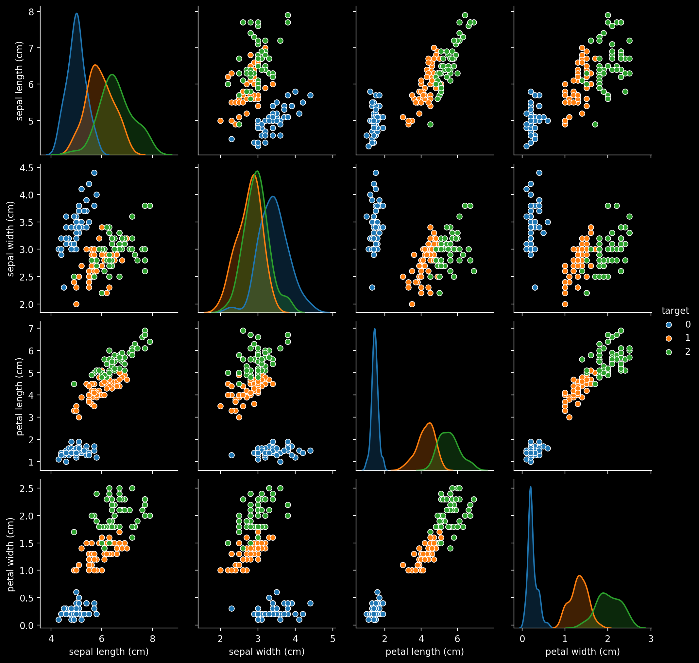
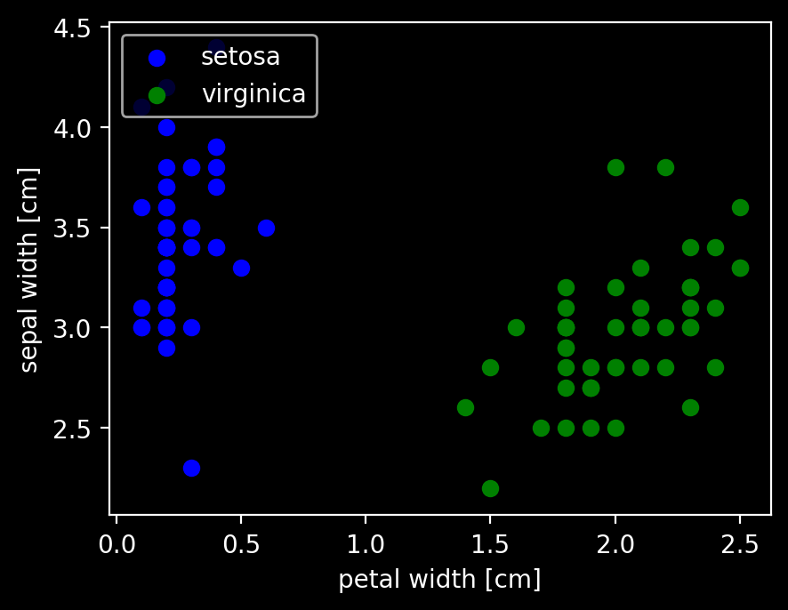
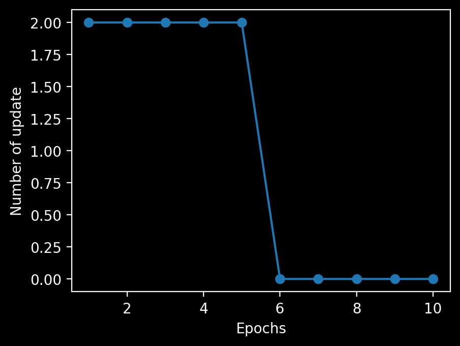
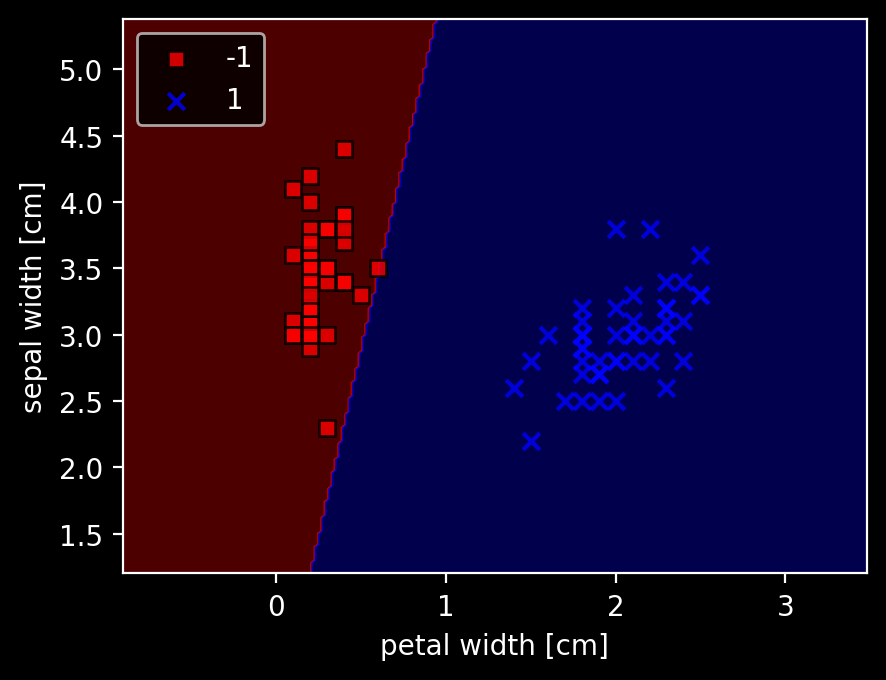
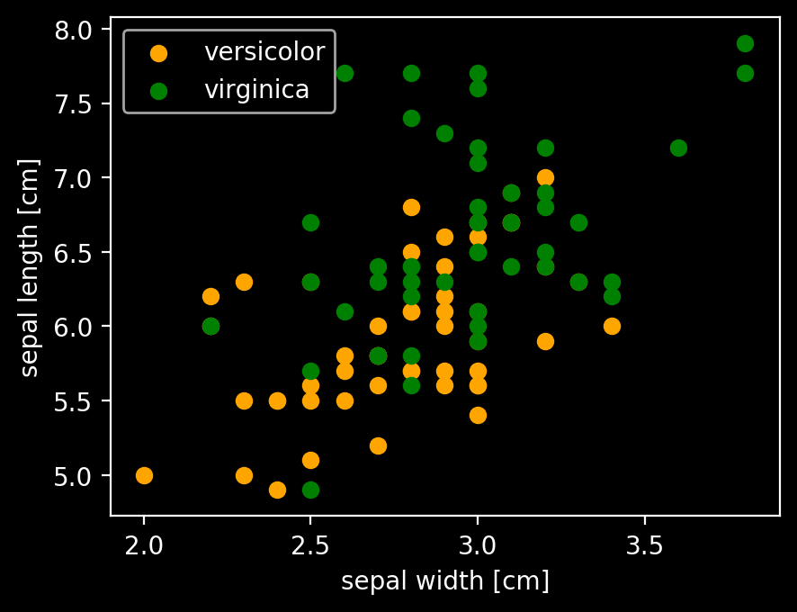
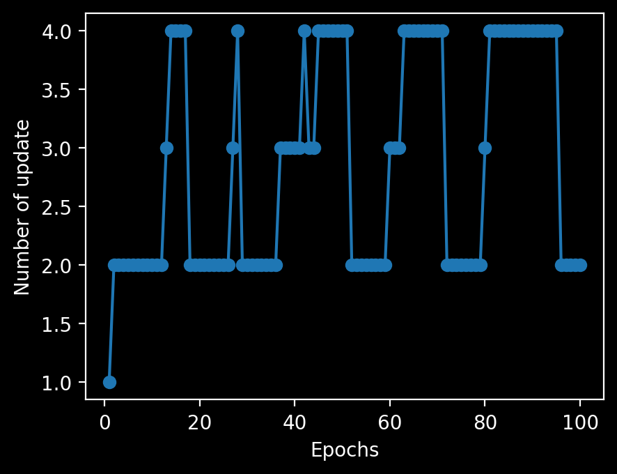
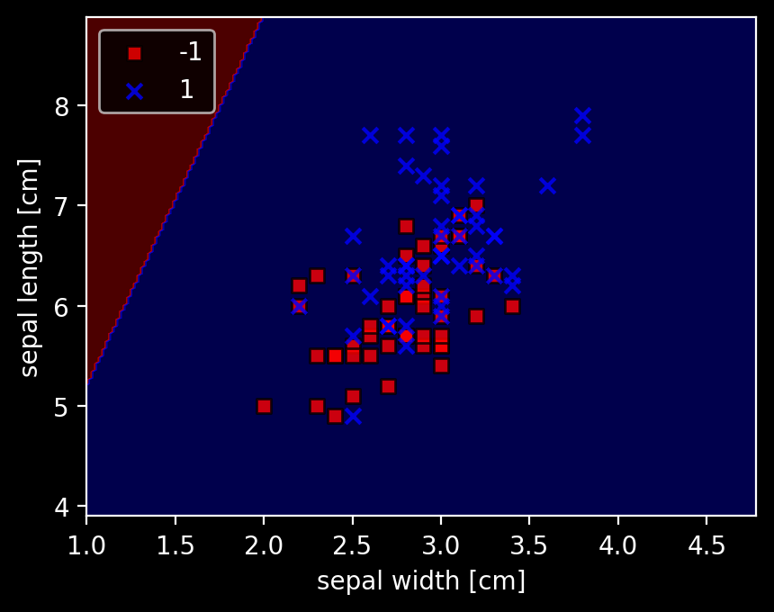

人工パーセプトロンの実装をpythonでやってみた
読んだ本

 amazon.co.jp
amazon.co.jp
↑ちょっとデータを変えて色々遊んでいますが、基本的にはこの本の2章をそのままやっただけです。
2. 分類問題 ー 単純な機械学習アルゴリズムのトレーニング
パーセプトロンの初期の学習規則
-
重み $ \mathbf{w} $ を0または値の小さい乱数で初期化する
-
トレーニングサンプル $ \mathbf{x}^{(i)} $ ごとに次の手順を実行する。
-
出力値 $ \hat{y} $ を計算する
-
重みを更新する
-
$$ w_j := w_j + \Delta w_j $$
$$ \Delta w_j = \eta (y^{(i)} - \hat{y}^{(i)}) x^{(i)}_j $$
$ \eta $ は学習率（通常、0.0よりも大きく、1.0以下の定数）$ y^{(i)} $ はi番目のトレーニングサンプルの真のクラスラベル、 $ \hat{y}^{(i)} $ は予測されたクラスラベル。
予測値 $ \hat{y}^{(i)} $ は
$$ z = w_0 x_0 + w_1 x_1 + … + w_m x_m = \mathbf{w^T x} $$
および
により決定される。
パーセプトロンでは線形分離可能で、学習率が十分小さい時のみ収束が保証される。
2.2 パーセプトロンの学習アルゴリズムをPythonで実装する
2.2.1 オブジェクト指向のパーセプトロンAPI
import numpy as np
class Perceptron(object):
"""パーセプトロンの分類器
パラメータ
-----------
eta : float
学習率(0.0より大きく1.0以下の値)
n_iter : int
トレーニングデータのトレーニング回数
random_state : int
重み初期化用乱数シード
属性
-----------
w_ : 1次元配列
適合後の重み
errors_ : リスト
各エポックでの誤分類（更新）の数
"""
def __init__(self, eta=0.01, n_iter=50, random_state=1):
self.eta = eta
self.n_iter = n_iter
self.random_state = random_state
def fit(self, X, y):
"""トレーニングデータに適合される
パラメータ
------------
X : {配列のようなデータ構造}, shape = [n_samples, n_features]
トレーニングデータ
n_samplesはサンプルの個数, n_featuresは特徴量の個数
y : 配列のようなデータ構造, shape = [n_samples]
目的変数
戻り値
------------
self : object
"""
rgen = np.random.RandomState(self.random_state)
self.w_ = rgen.normal(loc=0.0, scale=0.01, size=1 + X.shape[1])
self.errors_ = []
for _ in range(self.n_iter): # トレーニング回数分トレーニングデータを反復
errors = 0
for xi, target in zip(X, y): # 各サンプルで重みを更新
# 重み w_1, ..., w_m の更新
# Δw_j = η (y^(i)真値 - y^(i)予測) x_j (j = 1, ..., m)
update = self.eta * (target - self.predict(xi))
self.w_[1:] += update * xi
# 重み w_0 の更新 Δw_0 = η (y^(i)真値 - y^(i)予測)
self.w_[0] += update
# 重みの更新が0でない場合は誤分類としてカウント
errors += int(update != 0.0)
# 反復回数ごとの誤差を格納
self.errors_.append(errors)
return self
def net_input(self, X):
"""総入力を計算"""
return np.dot(X, self.w_[1:]) + self.w_[0]
def predict(self, X):
"""1ステップ後のクラスラベルを返す"""
return np.where(self.net_input(X) >= 0.0, 1, -1)
2.3 Irisデータセットでのパーセプトロンモデルのトレーニング
from sklearn.datasets import load_iris
import pandas as pd
iris = load_iris()
df = pd.DataFrame(iris.data, columns=iris.feature_names)
df['target'] = iris.target
# df.loc[df['target'] == 0, 'target'] = "setosa"
# df.loc[df['target'] == 1, 'target'] = "versicolor"
# df.loc[df['target'] == 2, 'target'] = "virginica"
df.head()
| sepal length (cm) | sepal width (cm) | petal length (cm) | petal width (cm) | target | |
|---|---|---|---|---|---|
| 0 | 5.1 | 3.5 | 1.4 | 0.2 | 0 |
| 1 | 4.9 | 3.0 | 1.4 | 0.2 | 0 |
| 2 | 4.7 | 3.2 | 1.3 | 0.2 | 0 |
| 3 | 4.6 | 3.1 | 1.5 | 0.2 | 0 |
| 4 | 5.0 | 3.6 | 1.4 | 0.2 | 0 |
import seaborn as sns
sns.pairplot(df, hue='target')
<seaborn.axisgrid.PairGrid at 0x125070ac8>

二値分類なので線形分離できそうな二種類に絞る。
また視覚的に見やすいように特徴量は2次元にする。
ラベル0と2で適当にすれば大体分離できるだろう。（本とは違うものを使いたい）
import numpy as np
import matplotlib.pyplot as plt
df2 = df.query("target != 1").copy() # label 1を除外
df2["target"] -= 1 # ラベルを1と-1に揃える
plt.scatter(df2.iloc[:50, 3], df2.iloc[:50, 1], color='blue', marker='o', label='setosa')
plt.scatter(df2.iloc[50:, 3], df2.iloc[50:, 1], color='green', marker='o', label='virginica')
plt.xlabel('petal width [cm]')
plt.ylabel('sepal width [cm]')
plt.legend(loc='upper left')
plt.show()

上のpairplotの右から1つ目、上から2つ目と同じように抜き出してプロットした。
このデータでパーセプトロンのアルゴリズムをトレーニングする。
X = df2[['petal width (cm)', 'sepal width (cm)']].values
Y = df2['target'].values
ppn = Perceptron(eta=0.1, n_iter=10)
ppn.fit(X, Y)
plt.plot(range(1, len(ppn.errors_) + 1), ppn.errors_, marker='o')
plt.xlabel('Epochs')
plt.ylabel('Number of update')
plt.show()

6回目のエポックでパーセプトロンが収束したことがわかる。
決定境界を可視化するために簡単かつ便利な関数を実装する。
from matplotlib.colors import ListedColormap
def plot_decision_regions(X, y, classifier, resolution=0.02):
# マーカーとカラーマップの準備
markers = ('s', 'x', 'o', '^', 'v')
colors = ('red', 'blue', 'lightgreen', 'gray', 'cyan')
cmap = ListedColormap(colors[:len(np.unique(y))])
# 決定領域のプロット
x1_min, x1_max = X[:, 0].min() - 1, X[:, 0].max() + 1
x2_min, x2_max = X[:, 1].min() - 1, X[:, 1].max() + 1
# グリッドポイントの生成
xx1, xx2 = np.meshgrid(np.arange(x1_min, x1_max, resolution),
np.arange(x2_min, x2_max, resolution))
# 各特徴量を1次元配列に変換して予測を実行
Z = classifier.predict(np.array([xx1.ravel(), xx2.ravel()]).T)
# 予測結果を元のグリッドポイントのデータサイズに変換
Z = Z.reshape(xx1.shape)
# グリッドポイントの等高線のプロット
plt.contourf(xx1, xx2, Z, alpha=0.3, cmap=cmap)
# 軸の範囲の設定
plt.xlim(xx1.min(), xx1.max())
plt.ylim(xx2.min(), xx2.max())
# クラスごとにサンプルをプロット
for idx, cl in enumerate(np.unique(y)):
plt.scatter(x=X[y == cl, 0],
y=X[y == cl, 1],
alpha=0.8,
c=colors[idx],
marker=markers[idx],
label=cl,
edgecolor='black')
# 決定領域のプロット
plot_decision_regions(X, Y, classifier=ppn)
plt.xlabel('petal width [cm]')
plt.ylabel('sepal width [cm]')
plt.legend(loc='upper left')
plt.show()

分けられないような場合もやってみる。
予想：収束はしなく、エポック数の限界で止まる。errorはマシにはなりそう。
import numpy as np
import matplotlib.pyplot as plt
df3 = df.query("target != 0").copy() # label 0を除外
y = df3.iloc[:, 4].values
y = np.where(y == 1, -1, 1) # label 1を-1に、その他（label 2）を1にする
plt.scatter(df3.iloc[:50, 1], df3.iloc[:50, 0], color='orange', marker='o', label='versicolor')
plt.scatter(df3.iloc[50:, 1], df3.iloc[50:, 0], color='green', marker='o', label='virginica')
plt.xlabel('sepal width [cm]')
plt.ylabel('sepal length [cm]')
plt.legend(loc='upper left')
plt.show()

上のpairplotの右から3つ目、上から1つ目と同じように抜き出してプロットした。
X2 = df3[['sepal width (cm)', 'sepal length (cm)']].values
ppn = Perceptron(eta=0.1, n_iter=100)
ppn.fit(X2, y)
plt.plot(range(1, len(ppn.errors_) + 1), ppn.errors_, marker='o')
plt.xlabel('Epochs')
plt.ylabel('Number of update')
plt.show()
# 決定領域のプロット
plot_decision_regions(X2, y, classifier=ppn)
plt.xlabel('sepal width [cm]')
plt.ylabel('sepal length [cm]')
plt.legend(loc='upper left')
plt.show()


全く分類されなかった。目で見るとyが大きい方がなんとなくlabel 1が多くなっているので、y = 6くらいで適当に分離するかと思ったが、そうではないらしい。
次はADALINEをやります。